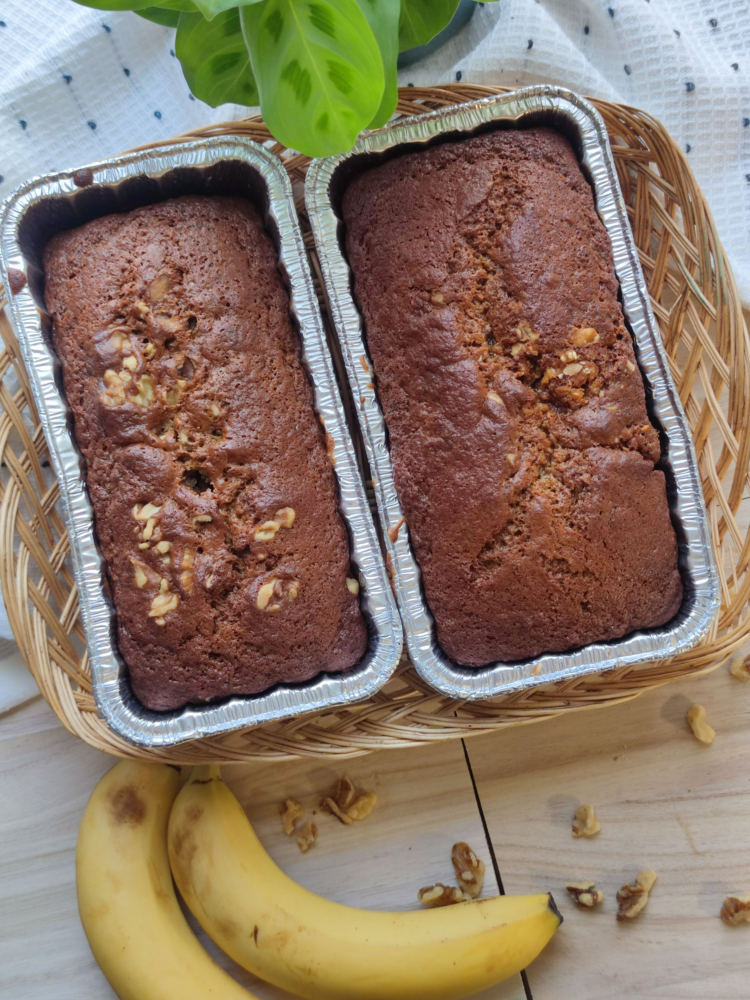

Banana Bread

Ingredients
- 4-5 Large Bananas.
- 120g Brown sugar.
- 120g Butter (Melted).
- 2-3 Large eggs.
- 1tsp Vanilla exract.
- 180g All-purpose flour.
- 1tsp baking soda.
- 1/2tsp salt.
- 1/2tsp cinnamon.
- Extras: 120g nut of choice, and or chocolate.
Steps
- Preheat oven to 180C.
- Wet ingredients: in a large bowl; mash the bananas then mix in eggs, sugar, melted butter and vanilla.
- Dry ingredients: in a medium bowl; whisk together flour, baking soda, salt and cinnamon.
- Mix wet and dry ingredients together, fold in your extra of choice.
- Prepare the bread pan, pour in the batter and top with more extras.
- Bake for about 50 minutes or until ready. Generally I found this to be around 40-50 minutes, but it depends.
- Enjoy!